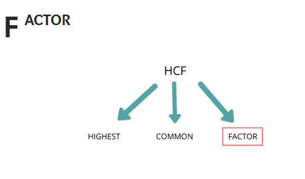

What is HCF ?
I know its full form. It’s highest common factor !
But do you know what is hcf and why it is called hcf ?
lets explore!
Lets first understand what factor in HCF means.

let me explain factor with an example.We all know that when one number is divided by another number , we get a remainder and a quotient.In this example when 10 is divided by 5 we get 2 as quotient and 0 as remainder.Here 10 is called dividend and 5 is called divisor. So finding factor of a number is finding all the divisor for that number for which the remainder will be 0.
Lets find factor of 10 itself!
Now we are ready to understand HCF once we know what factors of a
number is!
Lets say for example we have to find the HCF of 2 numbers 10,20 .
Step 1 : We will find all the factors of the given numbers

note: we are not including negative numbers as factors ! as it is not required.
Step 2 : We will select all the common factors from the list.
Step 3 : We will select all the common factors from the list.